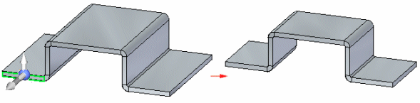
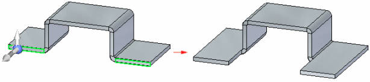
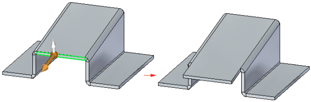
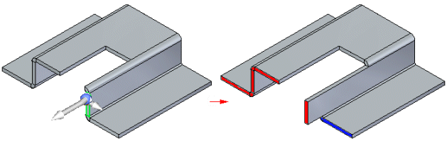

Using the Thickness Chain Design Intent option in sheet metal modeling
The Design Intent panel and the Advanced Design Intent panel work the same in synchronous sheet metal modeling as they do in synchronous part modeling. See Using the Design Intent panel for more information.
For synchronous sheet metal parts, a Thickness Chain option appears in the list of design intent relationships in the Design Intent panel and as an icon in the Advanced Design Intent panel.
The Thickness Chain maintains thickness faces connected by bends during a move operation. When the Thickness Chain option is set and a thickness face is moved, the other connected faces also move.

When the Thickness Chain option is not set, only the selected thickness face or faces move.

The Thickness Chain option ignores the Coplanar relationships within the thickness chain so the thickness chain does not have to be coplanar to work.

Relationships are not detected between members of the same thickness chain, but are detected between members of separate chains. So even though the Coplanar relationship is not detected within one thickness chain, it is detected from one thickness chain to another.
In the following example, Symmetry and Thickness Chain are disabled. When the selected face is moved, the faces in red move also because they are coplanar and are part of a separate thickness chain. Since Thickness Chain is disabled and the Coplanar rule is not detected within the thickness chain containing the face selected to move, the blue face does not move.

The Keep Orthogonal to Base option may need to be set to move or rotate a face that will cause a plate or thickness face to tip at an angle not orthogonal to the base reference plane.